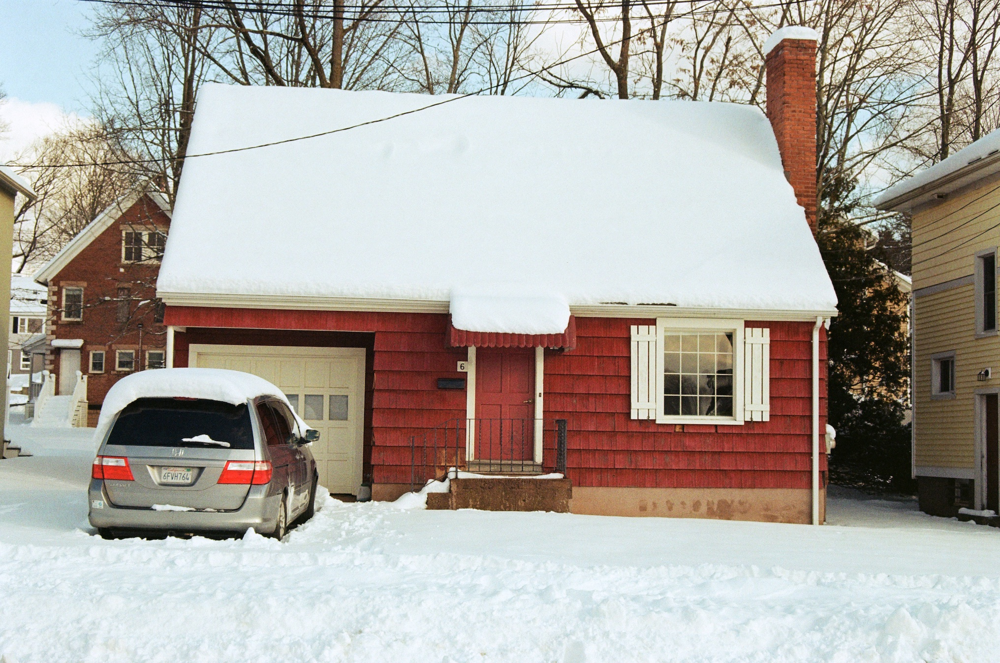

1 - the backstory
5.29.23
My home in college, jan 2022
This project officially started last winter, as I was sitting in my dorm, snowed inside during January of last year, slowly hibernating through both winter break and my thesis deadline. The sun was going down at 4pm. I was pushing myself to take outside walks in the beautiful but breakingly cold suburban woods of Middletown, Connecticut. Winter was intense.
I really like the SP404. It's my sketchbook, it feels... not quite 'extension of my body', but more like 'bar where everyone knows me.' It's my getaway driver. It's become a big part of how I write music now, and that past winter I was spending around two hours each night (which, again, started at like 4pm) writing and recording tiny snippets of would-be songs and mushing the audio around with the mkii's FX engine.
a literal 10s of audio written on the mkii
Its strong suit is experimentation; the SP's playfullness and live-recording feels engaging and exciting when I'm writing with it. However, when it comes to writing longer pieces, or iterating over ideas without re-recording everything, the SP starts lacking.
So, that winter in Connecticut, deep in my heart, a memory burned brightly: FL Studio Mobile. From 2011.
FL Mobile's piano roll and step sequencer
Yeah, that's right. Mobile. Sometimes this app is still how I think about writing songs. I won't go over all the features that I remember making this app great, in truth because it wasn't really that great, but the 2011 pocket DAW was built around writing digital notes into FL's step sequencer and piano roll through a minimal interface, one that you could use with just your thumbs. The app allowed for flexible and intuitive editing, live recording, and experimentation with sequenced notes. The first instrument I really learned how to play became the piano roll, on a train and in between class. This was literally my jam.
That winter, when I started this project, the closest thing the SP404mkii had to a step sequencer was its pattern record mode, which was cool but made it difficult to write anything complex without breaking out some paper to keep track of what pattern was doing what. A few months later roland released firmware 2.0, which did have a step sequencer, but again lacked in clarity and speed while editing, at least for my limited-patience-ass. This project isn't a criticism of the mkii, I really love the mkii, but the specific limitations of pattern and TR-REC mode leave so much to be desired, especially because the mkii is such a powerful machine.
MKii's TR-REC and pattern playback display, which is such a missed opportunity (?!?)
The missed design opportunities are weird; the mkii uses a 128x64 OLED display that could show a lot more than it does, as it is now TR-REC mode displays a few note-specific options (which is nice) but the pattern mode displays... the playhead position in giant numbers. Imagine how rad it would be to fully write, edit, and play back little arpeggios of samples, faster than human hands could play them, with the freedom to tweak them in real time.
TR-REC mode is so nonvisual, especially if your pattern is longer than 16 steps, that it's just too clunky to do this, and Pattern mode is really more like a performance capture (which is great) than it is for sequencing new music. You also can't "bounce" your patterns to MIDI files, which would be cool.
Contrasting this with FL Mobile, I started feeling like there was so much potential locked up in how we interface with music software. FL Mobile sounded bad, which isn't to say it was impossible to make great music on it, but importantly sound wasn't what made it fun and creative. The fluidity of its interface and its integration into a portable device, alongside the ability to endlessly tinker with my notated rectangles made me obsessed with writing tiny clips of hopeful songs on my BART rides to and from school. I was, and still am sure that having good pen is more important than good paper, and the mkii got me thinking--
How do I want to write music?
The challenge was to make:
Thus, the Stepchild was born in early january on a raspberry pi pico.
The first pico program I wrote, sending USB MIDI to Ableton Live on my laptop